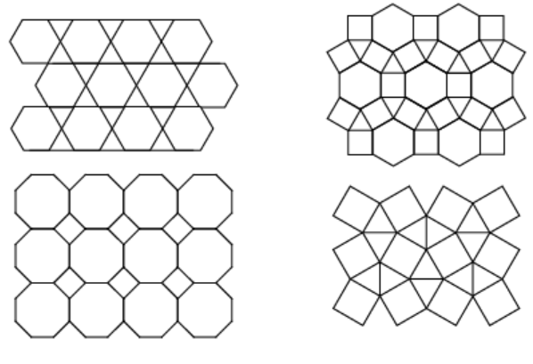

설명
기하학 용어.
일정한 형태의 도형들로 평면을 빈틈 없이 채우는 것. 평면작성, 타일링 등으로 불리기도 하며 '쪽매맞춤' 혹은 '쪽매붙임'으로 번역되기도 한다.
같은 모양의 정다각형으로 테셀레이션을 하려면 정삼각형, 정사각형, 정육각형 밖에 불가능하지만 (이 세 개의 정다각형만이 한 각의 크기가 360의 약수이기 때문이다) ,
두 가지 이상의 정다각형을 활용해서 다양한 테셀레이션을 할 수 있다. 물론 정다각형이 아닌 모양으로도 테셀레이션을 할 수 있다. 보통 타일을 몇 개 조합해 만든 일정한 형태가 반복되어 나타나게 되지만, 그런 패턴이 존재하지 않는 펜로즈 타일링(Penrose tilling) 등의 테셀레이션도 존재한다.

종류
- 테셀레이션이 가능한 정다각형 3개 이상의 꼭짓점이 한 점에서 만나야 한다. 한 내각의 크기가 360의 약수여야 한다. 따라서 정삼각형, 정사각형, 정육각형은 테셀레이션이 가능하나 정오각형이나 원과 같은 도형은 어떠한 방법으로도 빈틈이 생기거나 내부가 겹치게 되어 테셀레이션이 가능하지 않다.
- 1.주기적 테셀레이션 주기적 테셀레이션은 정칙 테셀레이션과 비정칙 테셀레이션으로 나뉜다.
- *정칙 테셀레이션: 하나의 정다각형 도형으로만 이루어진 것
- *반정칙 테셀레이션: 한 꼭짓점을 중심으로 모양이 서로 다른 정다각형으로 이루어진 것
- -2.비주기적 테셀레이션: 어떠한 평행이동에 대해서도 주어진 테셀레이션과 정확하게 일치하지 않는 것
어디에 있을까?
같은 모양의 조각들을 서로 겹치거나 틈이 생기지 않게 늘어놓아 평면이나 공간을 덮는 것.
합동변환을 이용함, 한 꼭짓점에 모이는 각은 360도이다
테셀레이션 활용 예: 포장지, 궁궐의 단청, 거리의 보도블록, 욕실의 타일 바닥 등

0